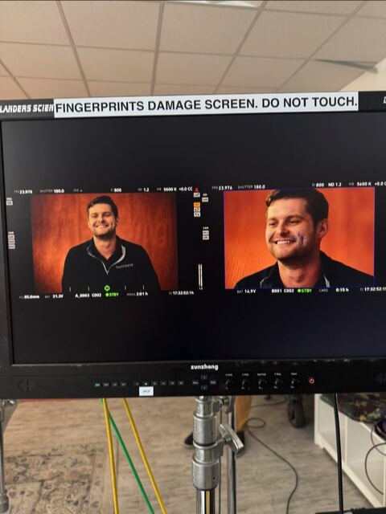

Anthropic brought its Claude SMB Workshop to Detroit, gathering roughly 100 business owners to learn how small and midsize companies are putting artificial intelligence to work. SaniCrete Vice President Tyler Kwasny was there, and he was selected for an on-camera interview about how SaniCrete is using AI.

AI in a Hands-On Business
SaniCrete manufactures and installs resinous flooring systems for food and beverage facilities. The work still happens on real plant floors, often during nights, weekends, holidays, and tightly scheduled shutdowns. AI does not replace the crews, the field experience, or the responsibility that comes with keeping a facility on schedule.
What it can do is help the business organize information, communicate more clearly, and turn useful ideas into action faster. That practical connection between new technology and day-to-day operations is what made the Detroit workshop worth attending.
Ideas Going Straight to Work
Tyler left the workshop with several ideas that were ready to be put into practice. That was the reason for attending in the first place: not to talk about AI as a distant concept, but to find useful applications for a growing company serving demanding industrial customers.
As Tyler put it in the original post, he was not sure how a flooring guy ended up in front of the camera. But SaniCrete has always been willing to look for a better way to solve a problem, whether that means developing a stronger floor system, building a tool for a difficult detail, or learning how new technology can improve the business behind the installation.
The Interview Is Still to Come
Anthropic plans to release the video after completing the rest of its workshop tour. We will share the finished interview when it becomes available.